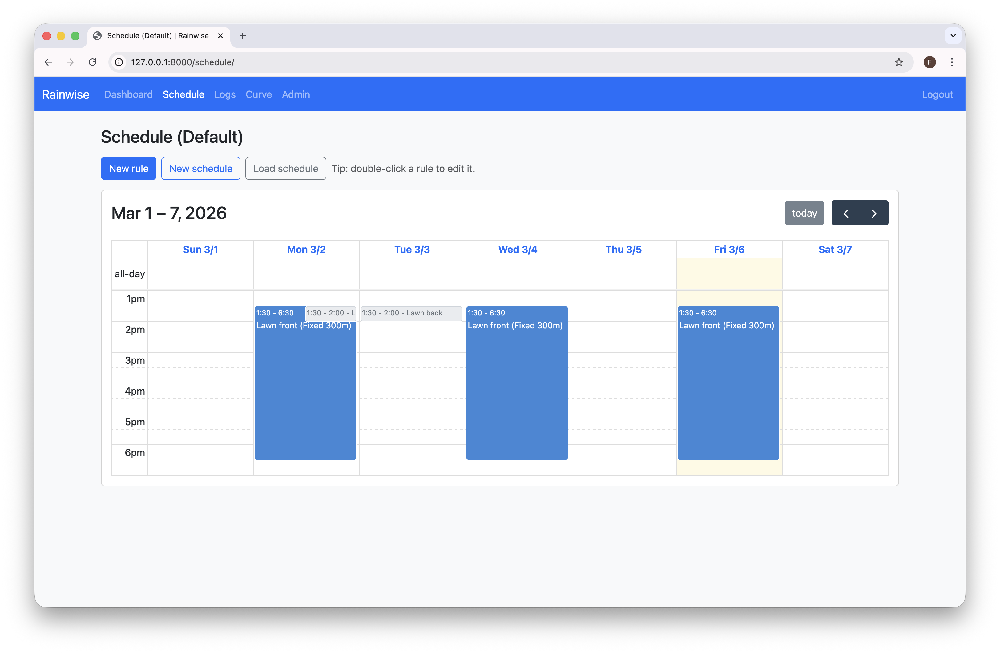
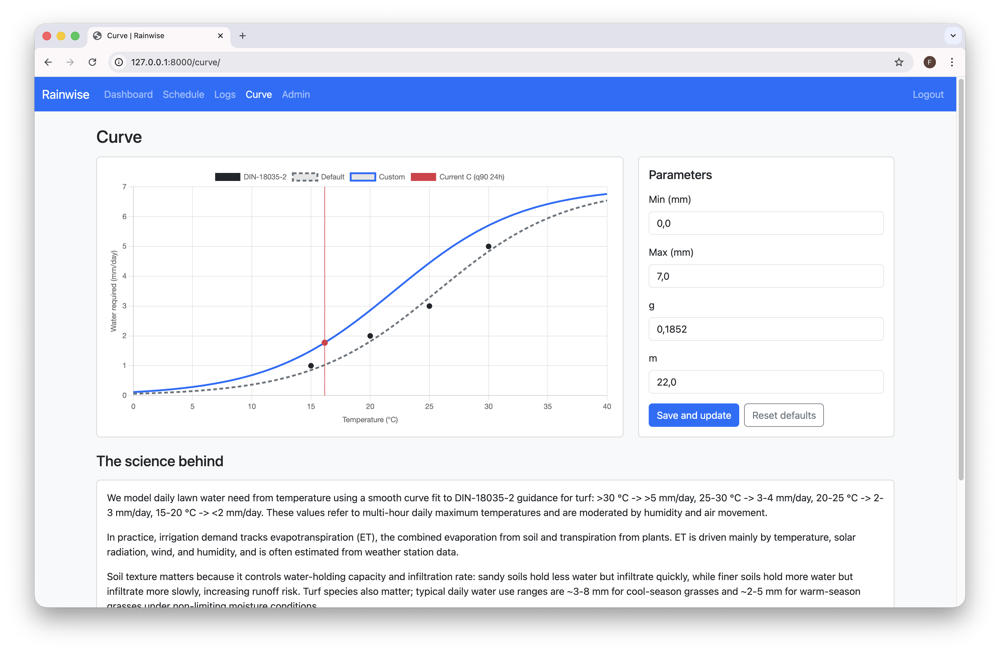

Irrigation control, simplified
Rainwise is a lightweight Django app for managing valves, schedules, and the science behind dynamic watering. Built for reliability, low resource usage, and simple deployment.
A weekly calendar view makes it easy to see every rule, edit it with a double-click, and keep the schedule simple and transparent.
Hourly weather data is stored for future optimization. The curve view makes the irrigation model explicit, adjustable, and inspectable.
Every run is bounded by a hard stop. The controller watches for unexpected open valves and closes them automatically.


Rainwise is designed for small hardware, Docker, and TrueNAS SCALE. It avoids heavy background workers, runs a single controller loop, and keeps configuration straightforward.
Dynamic irrigation will combine curve parameters, weather history, and site-specific factors like soil type, wind exposure, and irrigation efficiency to compute optimal run times.